一看就会的Next.js App Router版 -- Routing(上)¶
Routing Fundamentals¶
每个应用程序的骨架都是路由。这一页将向你介绍网络路由的基本概念，以及如何在Next.js中处理路由。
Terminology¶
首先，您将看到这些术语在整个文档中使用。这里有一个快速参考:
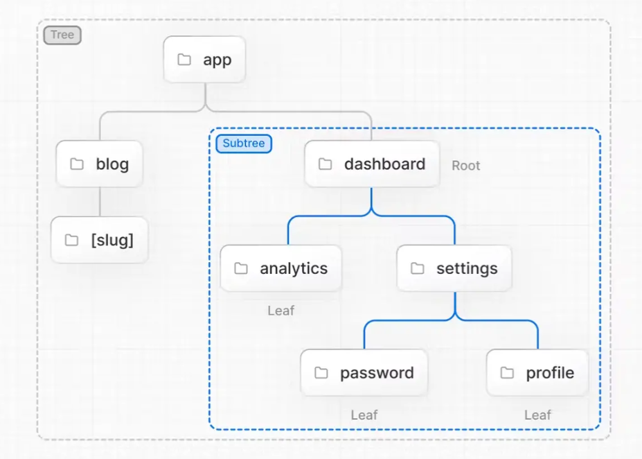
-
Tree: A convention for visualizing a hierarchical structure. For example, a component tree with parent and children components, a folder structure, etc.
-
Subtree: Part of a tree, starting at a new root (first) and ending at the leaves (last).
-
Root: The first node in a tree or subtree, such as a root layout.
-
Leaf: Nodes in a subtree that have no children, such as the last segment in a URL path.
-
URL Segment: Part of the URL path delimited by slashes.Part of the URL path delimited by slashes. URL路径的一部分，用斜杠分隔
-
URL Path: Part of the URL that comes after the domain (composed of segments). 域名之后的URL的一部分(由段组成)。
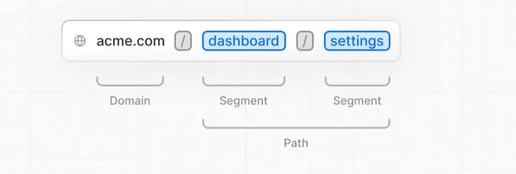
The app Directory¶
在版本 13 中，Next.js 引入了一个基于 React Server Components构建的新 App Router，它支持共享布局、嵌套路由、加载状态、错误处理等。
App Router 在一个名为 app 的新目录中工作。 app 目录与 pages 目录一起工作以允许增量采用。这允许您将应用程序的某些路由选择为新行为，同时将其他路由保留在页面目录中以用于先前的行为。如果您的应用程序使用 pages 目录，另请参阅 Pages Router 文档。
提示：App Router 优先于 Pages Router。跨目录的路由不应解析为相同的 URL 路径，并且会导致构建时错误以防止冲突。
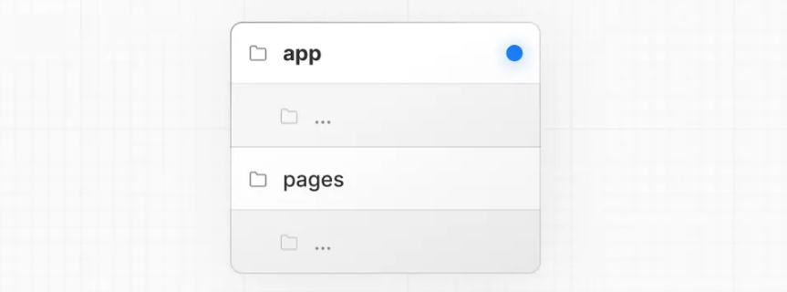
默认情况下，app 中的组件是 React Server Components。这是一种性能优化，可以让您轻松采用它们，您还可以使用客户端组件 Client Components.。
建议：如果您不熟悉服务器组件，请查看服务器和客户端组件页面。
Roles of Folders and Files¶
文件夹和文件的作用
In the App Router:
在应用路由器中：
- 文件夹用于定义路线。路由是嵌套文件夹的单个路径，遵循从根文件夹到包含
page.js文件的最终叶文件夹的层次结构。 - 文件用于创建为路线段显示的 UI。见特殊文件。
Route Segments¶
路线段
路线中的每个文件夹代表一个路线段。每个路由段都映射到 URL 路径中的相应段。
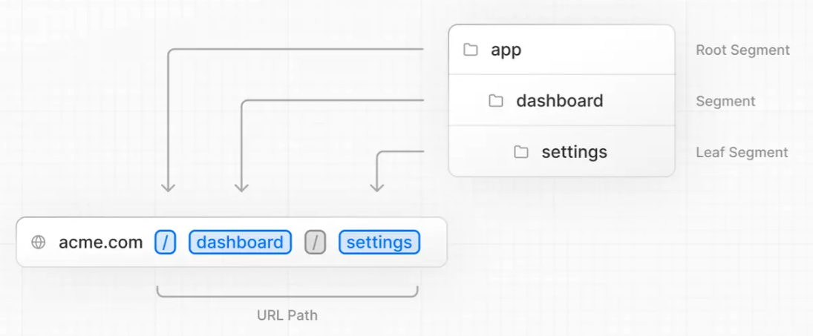
Nested Routes¶
嵌套路由
要创建嵌套路由，您可以将文件夹相互嵌套。例如，您可以通过在 app 目录中嵌套两个新文件夹来添加新的 /dashboard/settings 路由。
/dashboard/settings 路由由三个部分组成：
/(Root segment) /（根段）dashboard(Segment) 仪表板（部分）settings(Leaf segment) 设置（叶段）
File Conventions¶
Next.js 提供了一组特殊文件来创建在嵌套路由中具有特定行为的 UI：
-
page.js: 创建路由的唯一 UI 并使路径可公开访问。
-
route.js: 为路由创建服务器端 API 端点。
-
layout.js: 为段及其子段创建共享 UI。布局包裹页面或子段。
-
template.js: 类似于layout.js，只是在navigation上挂载了一个新的组件实例。除非您需要这种行为，否则请使用布局。
-
loading.js: 为片段及其子片段创建加载 UI。
loading.js在React Suspense Boundary中包装页面或子段 ，在加载时显示加载 UI -
error.js: 将页面或子段包装在React Error Boundary错误边界中如果捕获到错误，则显示错误 UI。
-
global-error.js: 类似于 error.js，但专门用于捕获根 layout.js 中的错误。
not-found.js: 创建 UI 以显示何时在路由段内抛出 notFound 函数或何时 URL 与任何路由都不匹配。
提示：.js、.jsx 或 .tsx 文件扩展名可用于特殊文件。
Component Hierarchy¶
组件层次结构
在路由段的特殊文件中定义的 React 组件在特定的层次结构中呈现：
layout.js- 布局.js
template.js- 模板.js
error.js(React error boundary)- error.js（反应错误边界）
loading.js(React suspense boundary)- loading.js（React悬念边界）
not-found.js(React error boundary)- not-found.js（反应错误边界）
page.jsor nestedlayout.js- page.js 或嵌套 layout.js
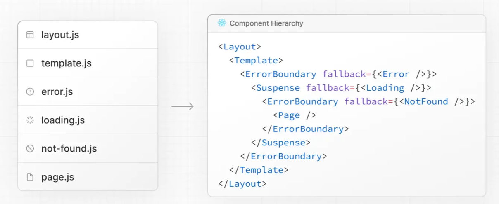
在嵌套路由中，段的组件将嵌套在其父段的组件内。
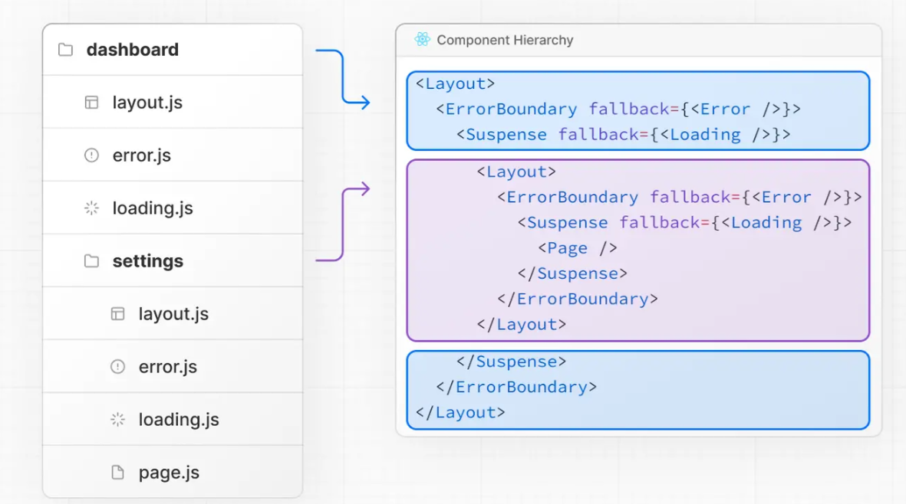
Colocation¶
托管
除了特殊文件之外，您还可以选择将自己的文件放在文件夹中。例如，样式表、测试、组件等。
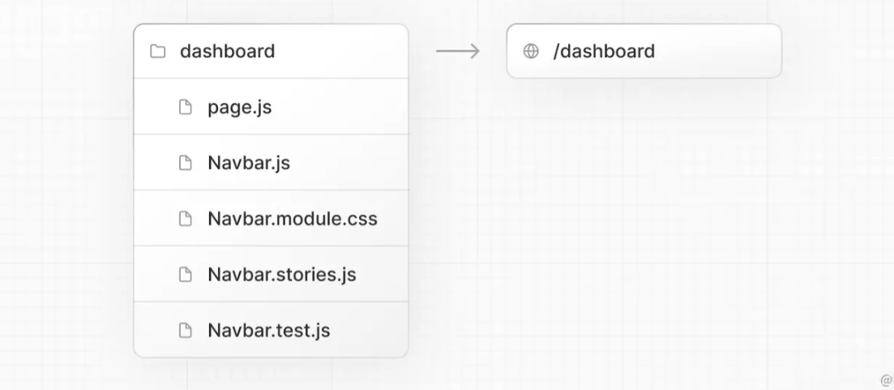
This is because while folders define routes, only the contents returned by page.js or route.js are publicly addressable.

Learn more about Project Organization and Colocation
Server-Centric Routing with Client-side Navigation¶
具有客户端导航的以服务器为中心的路由
与使用客户端路由的页面目录不同，App Router 使用以服务器为中心的路由来与服务器上的服务器组件和数据获取保持一致。使用以服务器为中心的路由，客户端不必下载路由映射，并且可以使用对服务器组件的相同请求来查找路由。此优化对所有应用程序都有用，但对具有许多路由的应用程序影响更大。
尽管路由是以服务器为中心的，但路由器使用带有链接组件的客户端导航——类似于单页应用程序的行为。这意味着当用户导航到新路由时，浏览器不会重新加载页面。相反，URL 将被更新并且 Next.js 将只呈现更改的段。
此外，当用户在应用程序中导航时，路由器会将 React 服务器组件负载的结果存储在内存中的客户端缓存中。缓存由路由段分割，允许在任何级别失效并确保 React 的并发渲染之间的一致性。这意味着在某些情况下，可以重新使用先前获取的段的缓存，从而进一步提高性能。
查看链接和导航页面以了解如何使用链接组件。
Partial Rendering¶
局部渲染
在同级路由之间导航时（例如下面的 /dashboard/settings 和 /dashboard/analytics），Next.js 将只获取和渲染路由中发生变化的布局和页面。它不会重新获取或重新呈现子树中段上方的任何内容。这意味着在共享布局的路由中，当用户在同级页面之间导航时，布局将被保留。
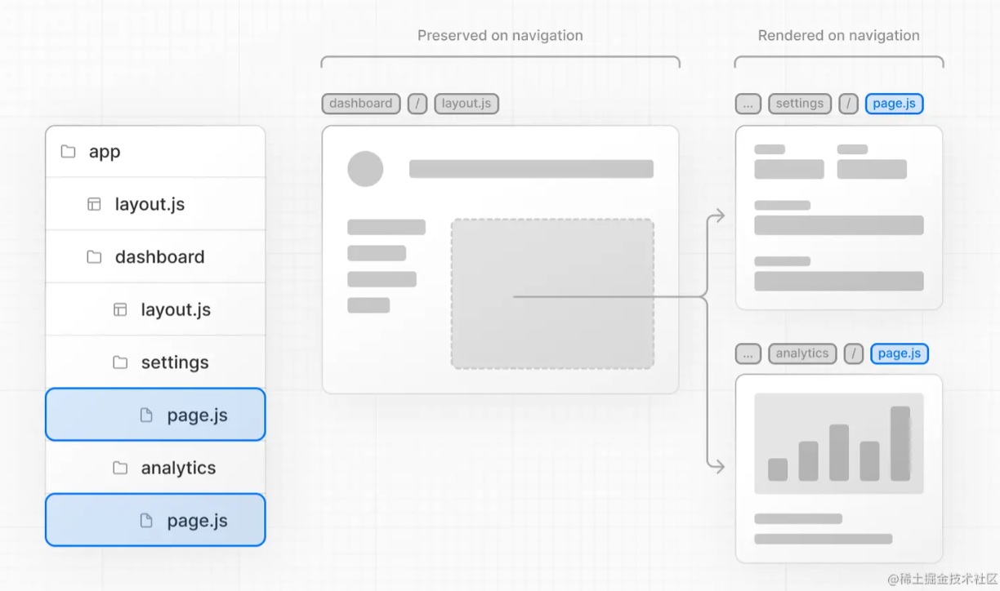
如果没有部分呈现，每次导航都会导致整个页面在服务器上重新呈现。仅渲染正在更新的片段可减少传输的数据量和执行时间，从而提高性能。
Advanced Routing Patterns¶
高级路由模式
App Router 还提供了一组约定来帮助您实现更高级的路由模式。这些包括：
- 并行路由: 允许您在同一视图中同时显示两个或多个可以独立导航的页面。您可以将它们用于具有自己的子导航的拆分视图。例如。仪表板。
- Intercepting Routes拦截路线: 允许您截取一条路线并将其显示在另一条路线的上下文中。当保持当前页面的上下文很重要时，您可以使用它们。例如。在编辑一个任务或展开提要中的一张照片时查看所有任务。
这些模式允许您构建更丰富和更复杂的 UI，使小型团队和个人开发人员过去难以实现的功能民主化。
Defining Routes¶
我们建议在继续之前阅读路由基础知识页面。
此页面将指导您完成如何在 Next.js 应用程序中定义和组织路由。
Creating Routes¶
创建路线
在 app 目录中，文件夹用于定义路由。
每个文件夹代表一个映射到 URL 段的路由段。要创建嵌套路由，您可以将文件夹相互嵌套。
一个特殊的 page.js 文件用于使路由段可公开访问。
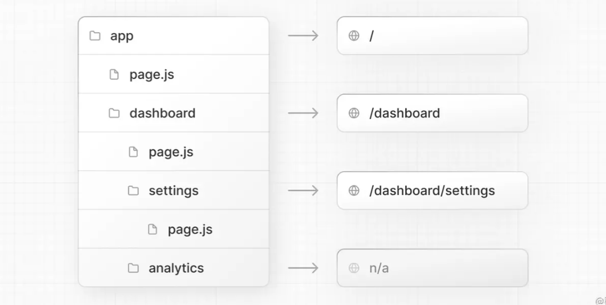
在此示例中，/dashboard/analytics URL 路径不可公开访问，因为它没有对应的 page.js 文件。此文件夹可用于存储组件、样式表、图像或其他位于同一位置的文件。
提示：.js、.jsx 或 .tsx 文件扩展名可用于特殊文件。
Creating UI¶
创建用户界面
特殊文件约定用于为每个路由段创建 UI。最常见的是pages显示某路线特有 UI 的页面，以及显示跨多个路线共享的 UI 的布局。
例如，要创建您的第一个页面，请在 app 目录中添加一个 page.js 文件并导出一个 React 组件：
app/page.js
Pages and Layouts¶
Next.js 13 中的 App Router 引入了新的文件约定，可以轻松创建页面、共享布局和模板。本页将指导您了解如何在 Next.js 应用程序中使用这些特殊文件。
Pages¶
页面是路线特有的 UI。您可以通过从 page.js 文件导出组件来定义页面。使用嵌套文件夹定义路线和 page.js 文件以使路由可公开访问。
通过在 app 目录中添加 page.js 文件来创建您的第一个页面：
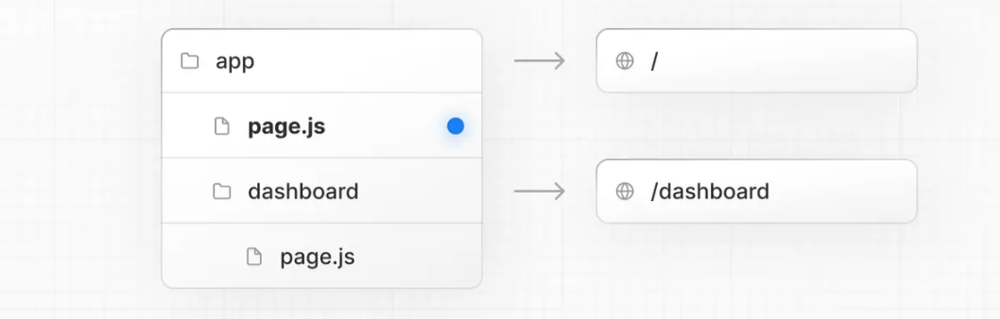
app/page.js
Good to know:
- 页面始终是路由子树的叶子。
.js、.jsx或.tsx文件扩展名可用于页面。- 需要一个
page.js文件来使路由段可公开访问。 - 默认情况下，页面是服务器组件，但可以设置为客户端组件。
- 页面可以获取数据。查看数据获取部分了解更多信息。
Layouts¶
布局
布局是在多个页面之间共享的 UI。在导航时，布局会保留状态、保持交互并且不会重新呈现。布局也可以嵌套。
您可以默认从 layout.js 文件导出 React 组件来定义布局。该组件应该接受一个 children 属性，该属性将在渲染期间填充子布局（如果存在）或子页面。
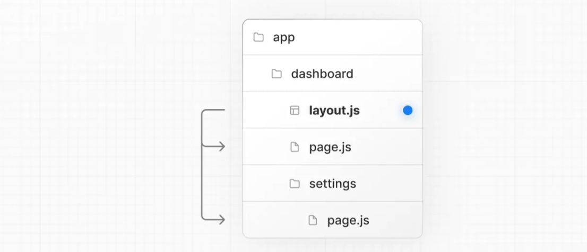
app/dashboard/layout.tsx
- 最顶层的布局称为根布局。这个必需的布局在应用程序的所有页面之间共享。根布局必须包含
html和body标签。 - 任何路线段都可以选择定义自己的布局。这些布局将在该段的所有页面中共享。
- 默认情况下，路由中的布局是嵌套的。每个父布局都使用 React
children属性将子布局包裹在其下方。 - 您可以使用路线组选择特定路线段进出共享布局。
- 默认情况下，布局是服务器组件，但可以设置为客户端组件。
- 布局可以获取数据。
- 无法在父布局与其子布局之间传递数据。但是，您可以在一条路由中多次获取相同的数据，React 会自动对请求进行重复数据删除，而不会影响性能。
- 布局无权访问当前路线段。要访问路线段，您可以在客户端组件中使用 useSelectedLayoutSegment 或 useSelectedLayoutSegments 。
- .js、.jsx 或 .tsx 文件扩展名可用于布局。
- layout.js 和 page.js 文件可以定义在同一个文件夹中。布局将包装页面。
Root Layout (Required)¶
根布局（必需）
根布局定义在应用程序app目录的顶层，适用于所有路由。此布局使您能够修改从服务器返回的初始 HTML。
app/layout.tsx
<html> 和 <body> 标签，因为 Next.js 不会自动创建它们。
- 您可以使用内置的 built-in SEO support 支持来管理 <head> HTML 元素，例如 <title> 元素。
- 您可以使用路由组来创建多个根布局。请在此处查看示例。
- 默认情况下，根布局是一个服务器组件，不能设置为客户端组件。
Nesting Layouts¶
嵌套布局
在文件夹内定义的布局（例如 app/dashboard/layout.js）适用于特定的路线段（例如 acme.com/dashboard）并在这些段处于活动状态时呈现。默认情况下，文件层次结构中的布局是嵌套的，这意味着它们通过 children 属性包装子布局。
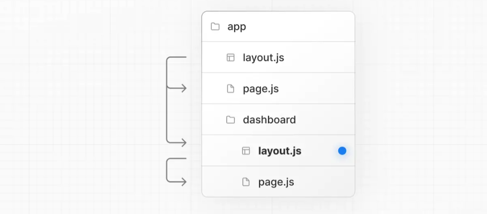
app/dashboard/layout.tsx
If you were to combine the two layouts above, the root layout (app/layout.js) would wrap the dashboard layout (app/dashboard/layout.js), which would wrap route segments inside app/dashboard/*.
如果您要组合上面的两个布局，根布局 (app/layout.js) 将包装仪表板布局 (app/dashboard/layout.js)，这会将路由段包装在 app/dashboard/* 内。
这两个布局将嵌套如下：
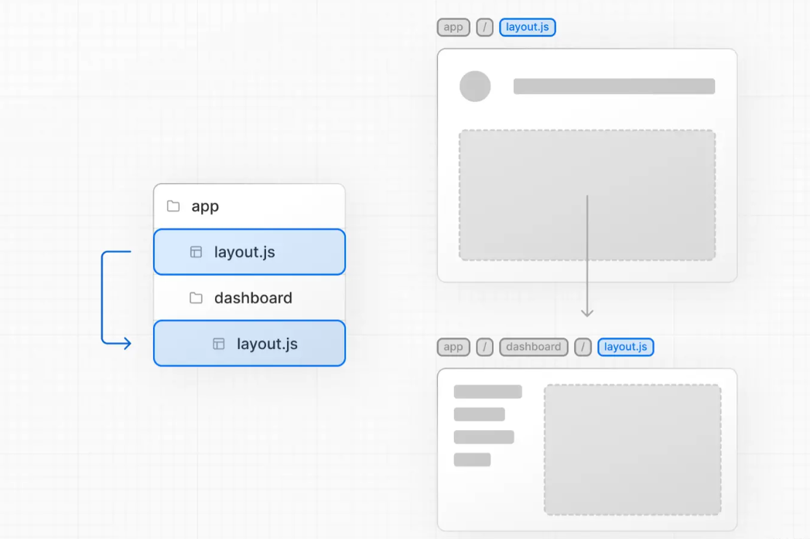
您可以使用路线组选择特定路线段进出共享布局。
Templates¶
模板
模板类似于布局，因为它们包装每个子布局或页面。与跨路由持续存在并保持状态的布局不同，模板在导航时为它们的每个子元素创建一个新实例。这意味着当用户在共享模板的路由之间导航时，将安装组件的新实例，重新创建 DOM 元素，不保留状态，并重新同步效果。
在某些情况下，您可能需要那些特定的行为，而模板将是比布局更合适的选择。例如：
- 使用 CSS 或动画库进入/退出动画。
- 依赖于
useEffect（例如记录页面视图）和useState（例如每页反馈表）的功能。 - 更改默认框架行为。例如，布局中的 Suspense Boundaries 仅在第一次加载布局时显示后备，而不是在切换页面时显示。对于模板，后备显示在每个导航中。
建议：我们建议使用布局，除非您有使用模板的特定原因。
可以通过从 template.js 文件导出默认的 React 组件来定义模板。该组件应该接受一个 children 属性，这将是嵌套的段。
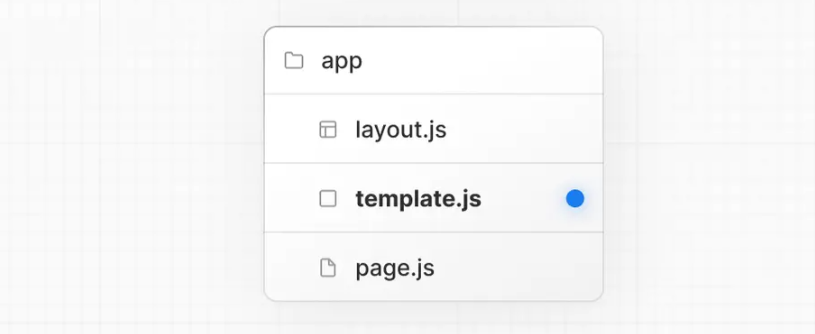
app/template.tsx
具有布局和模板的路由段的渲染输出将如下所示：
Output
Modifying <head>¶
修改<head>元素
在应用程序目录中，您可以使用内置的built-in SEO support支持修改 HTML 元素，例如标题和元数据。
可以通过在 layout.js 或 page.js 文件中导出元数据对象或 generateMetadata 函数来定义元数据。
app/page.tsx
提示：您不应该手动添加
<head>标签，例如<title>和<meta>到根布局。相反，您应该使用元数据 Metadata API，它会自动处理高级要求，例如流式处理和去重<head>元素。
在 API 参考中了解有关可用元数据选项的更多信息。
Linking and Navigating¶
链接和导航
Next.js 路由器使用以服务器为中心server-centric routing的路由和客户端导航 client-side navigation。它支持即时加载状态 instant loading states和并发渲染concurrent rendering
这意味着导航保持客户端状态，避免昂贵的重新渲染，是可中断的，并且不会导致竞争条件。
There are two ways to navigate between routes:
有两种方法可以在路线之间导航：
本页将介绍如何使用<Link>, useRouter()，并深入探讨导航的工作原理。
The <Link> Component¶
<Link> 组件
<Link> 是一个 React 组件，它扩展了 HTML <a>元素以提供路由之间的预取和客户端导航。这是在 Next.js 中的路由之间导航的主要方式。
要使用 <Link>，请从next/link 导入它，并将 href prop 传递给组件
app/page.tsx
您可以将可选属性传递给<Link> 。有关详细信息，请参阅 API 参考。
Examples¶
Linking to Dynamic Segments¶
链接到动态片段
链接到动态段时，您可以使用模板文字和插值生成链接列表。例如，要生成博客文章列表：
app/blog/PostList.jsx
Checking Active Links¶
检查活动链接
您可以使用 usePathname() 来确定链接是否处于活动状态。例如，要将一个类添加到活动链接，您可以检查当前路径名pathname是否与链接的 href 匹配：
app/components/links.tsx
Scrolling to an id¶
滚动到一个 id
<Link> 的默认行为是滚动到已更改的路线段的顶部。当 href 中定义了 id 时，它会滚动到特定的 id，类似于普通的<a>标签(https://link.juejin.cn/?target=)
为了防止滚动到路由段的顶部，设置 scroll={false} 并将添加一个哈希 id 传递给 href, 或者用router.push()/router.replace()添加scroll: false
The useRouter() Hook¶
useRouter() 钩子
useRouter 挂钩允许您以编程方式更改客户端组件内的路由。
要使用 useRouter，请从 next/navigation 导入它，并在您的客户端组件中调用钩子：
useRouter 提供了 push()、refresh() 等方法。有关详细信息，请参阅 API 参考。
建议：使用
<Link>组件在路由之间导航，除非您有使用useRouter的特定要求。
How Navigation Works¶
导航的工作原理
- 使用
<Link>或调用router.push()启动路由转换。 - 路由器更新浏览器地址栏中的 URL。
- 路由器通过重新使用客户端缓存中未更改的段（例如共享布局）来避免不必要的工作。这也称为部分渲染。
- 如果满足软导航的条件，则路由器从缓存而不是服务器中获取新段。如果不是，路由器将执行硬导航并从服务器获取服务器组件有效负载。
- 如果已创建，则会在获取有效负载时从服务器显示加载 UI。
- 路由器使用缓存的或新的有效负载在客户端上呈现新的段。
[Client-side Caching of Rendered Server Components]¶
渲染服务器组件的客户端缓存
提示：此客户端缓存不同于服务器端 Next.js HTTP 缓存
新路由器有一个内存中的客户端缓存，用于存储服务器组件（有效负载）的渲染结果。缓存按路由段拆分，允许在任何级别失效并确保并发渲染之间的一致性。
当用户在应用程序中导航时，路由器会将先前获取的段和预取段的有效负载存储在缓存中。
这意味着，在某些情况下，路由器可以重新使用缓存而不是向服务器发出新请求。这通过避免不必要地重新获取数据和重新渲染组件来提高性能。
Invalidating the Cache¶
使缓存失效
服务器操作可用于通过路径 revalidatePath 或缓存标记 revalidateTag按需重新验证数据。
Prefetching¶
预取是一种在访问路由之前在后台预加载路由的方法。预取路由的渲染结果被添加到路由器的客户端缓存中。这使得导航到预取路线近乎即时。
默认情况下，当使用<Link>组件时，路由在viewport中可见时会被预取。这可能会在页面首次加载或滚动时发生。也可以使用useRouter() hook的预取方法以编程方式预取路由。
静态和动态路由：
- 如果路由是静态的，路由段的所有服务器组件负载都将被预取。
-
如果路由是动态的，则预取从第一个共享布局到第一个
loading.js文件的有效负载。这降低了动态预取整个路由的成本，并允许动态路由的即时加载状态。 -
预取仅在生产中启用。
- 可以通过将
prefetch={false}传递给<Link>来禁用预取。
硬导航¶
在导航时，缓存失效，服务器重新获取数据并重新呈现更改的段。
Soft Navigation¶
在导航时，更改段的缓存将被重用（如果存在），并且不会向服务器发出新的数据请求。
软导航的条件¶
在导航方面，如果您导航到的路线已被预取，并且不包含动态段或具有与当前路线相同的动态参数，则 Next.js 将使用软导航。
例如，考虑以下包含动态 [team] 段的路由：/dashboard/[team]/*。 当[team]参数发生变化时/dashboard/[team]/*之下面的缓存段失效。
- 从 /dashboard/team-red/* 导航到 /dashboard/team-red/*将是一个软导航。
- 从 /dashboard/team-red/*导航到 /dashboard/team-blue/*将是硬导航。
后退/前进导航¶
前后导航popstate event事件具有软导航行为。这意味着，客户端缓存被重新使用，导航几乎是即时的。
Convention¶
可以通过将文件夹名称括在括号中来创建路由组：(folderName)
Examples¶
例子
在不影响 URL 路径的情况下组织路由¶
要在不影响 URL 的情况下组织路由，请创建一个组以将相关路由放在一起。括号中的文件夹将从 URL 中省略（例如 (marketing) 或 (shop)）。
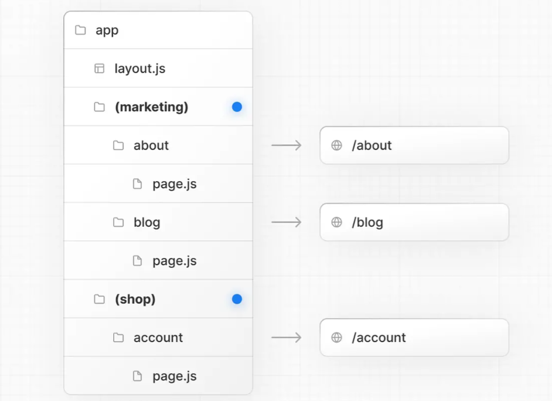
即使 (marketing) 和 (shop) 中的路由共享相同的 URL 层次结构，您也可以通过在其文件夹中添加 layout.js 文件来为每个组创建不同的布局。

将特定段选择到布局中¶
要将特定路线选择到布局中，请创建一个新路线组（例如(shop)）并将共享相同布局的路线移动到该组中（例如 account and cart）。组外的路线不会共享布局（例如checkout）。
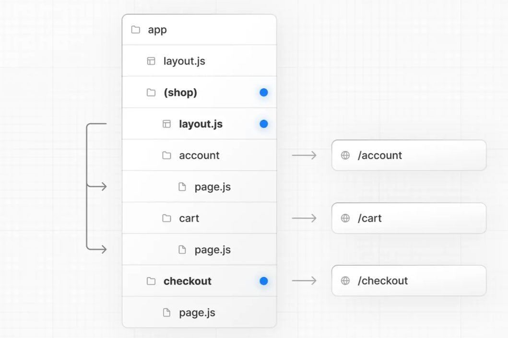
创建多个根布局¶
要创建多个根布局，请删除顶级 layout.js 文件，并在每个路由组中添加一个 layout.js 文件。这对于将应用程序划分为具有完全不同的 UI 或体验的部分非常有用。<html> 和<body>标签需要添加到每个根布局。
- 路由组的命名除了组织之外没有特殊意义。它们不影响 URL 路径。
- 路由组内的路由不应解析为相同的 URL 路径。例如，由于路由组不影响 URL 结构，
(marketing)/about/page.js和(shop)/about/page.js都会解析为/about并导致错误。 - 跨多个根布局导航将导致整个页面加载（与客户端导航相反）。例如，从使用
app/(shop)/layout.js的/cart导航到使用app/(marketing)/layout.js的/blog将导致整个页面加载。这仅适用于多根布局。
动态路由¶
当您事先不知道确切的路段名称并希望从动态数据创建路线时，您可以使用在请求时填写或在构建时prerendered的动态路段。
Convention约定¶
可以通过将文件夹名称括在方括号中来创建动态细分：[folderName]。例如，[id] 或[slug]。
动态细分作为 params 属性传递给布局、页面、路由和generateMetadata。
例子¶
例如，博客可以包含以下路由 app/blog/[slug]/page.js，其中 [slug] 是博客文章的动态部分。
app/blog/[slug]/page.tsx
请参阅 generateStaticParams() 页面以了解如何为段生成参数。
生成静态参数¶
generateStaticParams 函数可以与动态路由段结合使用，以在构建时静态生成路由，而不是在请求时按需生成路由。
app/blog/[slug]/page.tsx
generateStaticParams 函数的主要好处是它可以智能检索数据。如果使用fetch请求在 generateStaticParams 函数中提取内容，则会自动对请求进行重复数据删除。这意味着跨多个 generateStaticParams, Layouts 和 Pages 的具有相同参数的fetch请求将只会发出一次，从而减少了构建时间。
有关更多信息和高级用例，请参阅 generateStaticParams 服务器 服务器函数文档。
Catch-all Segments¶
通过在方括号 [...folderName] 内添加省略号，可以将动态段扩展为包含所有后续段。
例如，app/shop/[...slug]/page.js 将匹配 /shop/clothes，但也匹配 /shop/clothes/tops, /shop/clothes/tops/t-shirts 等。
Optional Catch-all Segments¶
通过在双方括号中包含参数，可以使 Catch-all Segments 成为可选的：[[...folderName]]。
比如app/shop/[[...slug]]/page.js也会匹配/shop，也包括/shop/clothes, /shop/clothes/tops, /shop/clothes/tops/t-shirts.
catch-all 和 optional catch-all segments 的区别在于，使用 optional 时，不带参数的路由也会被匹配（上例中的/shop）。
TypeScript¶
使用 TypeScript 时，您可以根据配置的路由段为params添加类型。
app/blog/[slug]/page.tsx
| Route | params Type Definition |
|---|---|
app/blog/[slug]/page.js | { slug: string } |
app/shop/[...slug]/page.js | { slug: string[] } |
app/[categoryId]/[itemId]/page.js | { categoryId: string, itemId: string } |
注意：这可能会在未来由 TypeScript 插件自动完成。
加载 UI 和流式传输¶
The special file loading.js helps you create meaningful Loading UI with React Suspense. With this convention, you can show an instant loading state from the server while the content of a route segment loads, the new content is automatically swapped in once rendering is complete.
特殊文件 loading.js 可帮助您使用 React Suspense 创建有意义的加载 UI
.使用此约定，您可以在加载路由段的内容时显示来自服务器的即时加载状态，一旦渲染完成，新内容将自动交换。
Instant Loading States¶
即时加载状态
An instant loading state is fallback UI that is shown immediately upon navigation. You can pre-render loading indicators such as skeletons and spinners, or a small but meaningful part of future screens such as a cover photo, title, etc. This helps users understand the app is responding and provides a better user experience.
即时加载状态是在导航时立即显示的回退 UI。您可以预渲染加载指示器，如骨架和微调器，或未来屏幕的一小部分但有意义的部分，如封面照片、标题等。这有助于用户了解应用程序正在响应并提供更好的用户体验。
Create a loading state by adding a loading.js file inside a folder.
通过在文件夹中添加 loading.js 文件来创建加载状态。

app/dashboard/loading.tsx
In the same folder, loading.js will be nested inside layout.js. It will automatically wrap the page.js file and any children below in a <Suspense> boundary.
在同一文件夹中，loading.js 将嵌套在 layout.js 中。它会自动将 page.js 文件和下面的任何子文件包装在 边界中。

Good to know:
很高兴知道：
- Navigation is immediate, even with server-centric routing.
- 导航是即时的，即使使用以服务器为中心的路由也是如此。
- Navigation is interruptible, meaning changing routes does not need to wait for the content of the route to fully load before navigating to another route.
- 导航是可中断的，这意味着更改路线不需要等待路线内容完全加载后再导航到另一条路线。
- Shared layouts remain interactive while new route segments load.
- 共享布局在加载新路线段时保持交互。
Recommendation: Use the
loading.jsconvention for route segments (layouts and pages) as Next.js optimizes this functionality.建议：对路由段（布局和页面）使用 loading.js 约定，因为 Next.js 优化了此功能。
Streaming with Suspense¶
In addition to loading.js, you can also manually create Suspense Boundaries for your own UI components. The App Router supports streaming with Suspense for both Node.js and Edge runtimes.
除了 loading.js 之外，您还可以为自己的 UI 组件手动创建 Suspense Boundaries。 App Router 支持使用 Suspense 进行流式传输 适用于 Node.js 和 Edge 运行时。
What is Streaming?¶
什么是流媒体？
To learn how Streaming works in React and Next.js, it's helpful to understand Server-Side Rendering (SSR) and its limitations.
要了解 Streaming 在 React 和 Next.js 中的工作原理，了解服务器端渲染 (SSR) 及其局限性很有帮助。
With SSR, there's a series of steps that need to be completed before a user can see and interact with a page:
使用 SSR，在用户可以查看页面并与之交互之前需要完成一系列步骤：
-
First, all data for a given page is fetched on the server.
首先，在服务器上获取给定页面的所有数据。 -
The server then renders the HTML for the page.
然后服务器呈现页面的 HTML。 -
The HTML, CSS, and JavaScript for the page are sent to the client.
页面的 HTML、CSS 和 JavaScript 被发送到客户端。 -
A non-interactive user interface is shown using the generated HTML, and CSS.
使用生成的 HTML 和 CSS 显示非交互式用户界面。 -
Finally, React hydrates the user interface to make it interactive.
最后，React 水合物 用户界面，使其具有交互性。

These steps are sequential and blocking, meaning the server can only render the HTML for a page once all the data has been fetched. And, on the client, React can only hydrate the UI once the code for all components in the page has been downloaded.
这些步骤是顺序的和阻塞的，这意味着服务器只能在获取所有数据后才能呈现页面的 HTML。而且，在客户端，React 只能在页面中所有组件的代码都已下载后才能对 UI 进行水合。
SSR with React and Next.js helps improve the perceived loading performance by showing a non-interactive page to the user as soon as possible.
使用 React 和 Next.js 的 SSR 通过尽快向用户显示非交互式页面来帮助提高感知加载性能。

However, it can still be slow as all data fetching on server needs to be completed before the page can be shown to the user.
但是，它仍然可能很慢，因为需要在页面显示给用户之前完成服务器上的所有数据获取。
Streaming allows you to break down the page's HTML into smaller chunks and progressively send those chunks from the server to the client.
Streaming 允许您将页面的 HTML 分解为更小的块，并逐步将这些块从服务器发送到客户端。

This enables parts of the page to be displayed sooner, without waiting for all the data to load before any UI can be rendered.
这使得部分页面能够更快地显示，而无需等待所有数据加载完毕才能呈现任何 UI。
Streaming works well with React's component model because each component can be considered a chunk. Components that have higher priority (e.g. product information) or that don't rely on data can be sent first (e.g. layout), and React can start hydration earlier. Components that have lower priority (e.g. reviews, related products) can be sent in the same server request after their data has been fetched.
Streaming 与 React 的组件模型配合得很好，因为每个组件都可以被视为一个块。优先级较高的组件（例如产品信息）或不依赖数据的组件可以先发送（例如布局），React 可以更早地开始水合。具有较低优先级的组件（例如评论、相关产品）可以在获取数据后在同一服务器请求中发送。

Streaming is particularly beneficial when you want to prevent long data requests from blocking the page from rendering as it can reduce the Time To First Byte (TTFB) and First Contentful Paint (FCP). It also helps improve Time to Interactive (TTI), especially on slower devices.
当您想要防止长数据请求阻止页面呈现时，流式处理特别有用，因为它可以减少首字节时间 (TTFB) 和第一内容绘画（FCP） 它还有助于改善交互时间 (TTI) ，尤其是在速度较慢的设备上。
Example¶
<Suspense> works by wrapping a component that performs an asynchronous action (e.g. fetch data), showing fallback UI (e.g. skeleton, spinner) while it's happening, and then swapping in your component once the action completes.
<Suspense> 的工作原理是包装一个执行异步操作（例如获取数据）的组件，在它发生时显示回退 UI（例如骨架、微调器），然后在操作完成后交换您的组件。
app/dashboard/page.tsx
By using Suspense, you get the benefits of:
通过使用 Suspense，您可以获得以下好处：
-
Streaming Server Rendering - Progressively rendering HTML from the server to the client. Streaming Server Rendering - 从服务器到客户端逐步渲染 HTML。
-
Selective Hydration - React prioritizes what components to make interactive first based on user interaction. Selective Hydration - React 根据用户交互优先考虑哪些组件首先进行交互。
For more Suspense examples and use cases, please see the React Documentation.
有关更多 Suspense 示例和用例，请参阅 React 文档
SEO¶
-
Next.js will wait for data fetching inside
generateMetadatato complete before streaming UI to the client. This guarantees the first part of a streamed response includes<head>tags. -
Next.js 将等待 generateMetadata 中的数据获取完成，然后再将 UI 流式传输到客户端。这保证了流式响应的第一部分包含 标签。
-
Since streaming is server-rendered, it does not impact SEO. You can use the Mobile Friendly Test tool from Google to see how your page appears to Google's web crawlers and view the serialized HTML (source).
-
由于流式传输是服务器呈现的，因此不会影响 SEO。您可以使用移动友好测试
来自 Google 的工具，用于查看您的页面如何出现在 Google 的网络爬虫中并查看序列化的 HTML（来源 ).
Error Handling¶
错误处理
The error.js file convention allows you to gracefully handle runtime errors in nested routes.
error.js 文件约定允许您优雅地处理嵌套路由中的运行时错误。
- Automatically wrap a route segment and its nested children in a React Error Boundary.
- 自动将路由段及其嵌套子项包装在 React 错误边界中
- Create error UI tailored to specific segments using the file-system hierarchy to adjust granularity.
- 使用文件系统层次结构来创建针对特定细分量身定制的错误 UI 以调整粒度。
- Isolate errors to affected segments while keeping the rest of the app functional.
- 将错误隔离到受影响的部分，同时保持应用程序的其余部分正常运行。
- Add functionality to attempt to recover from an error without a full page reload.
- 添加功能以尝试在不重新加载整页的情况下从错误中恢复。
Create error UI by adding an error.js file inside a route segment and exporting a React component:
通过在路由段内添加 error.js 文件并导出 React 组件来创建错误 UI：

app/dashboard/error.tsx
How error.js Works¶
error.js 是如何工作的

error.jsautomatically creates an React Error Boundary that wraps a nested child segment orpage.jscomponent.- error.js 自动创建一个 React 错误边界包装嵌套的子段或 page.js 组件。
- The React component exported from the
error.jsfile is used as the fallback component. - 从 error.js 文件导出的 React 组件用作回退组件。
- If an error is thrown within the error boundary, the error is contained, and the fallback component is rendered.
- 如果在错误边界内抛出错误，则包含错误，并呈现回退组件。
- When the fallback error component is active, layouts above the error boundary maintain their state and remain interactive, and the error component can display functionality to recover from the error.
- 当回退错误组件处于活动状态时，错误边界上方的布局会保持其状态并保持交互，并且错误组件可以显示从错误中恢复的功能。
Recovering From Errors¶
从错误中恢复
The cause of an error can sometimes be temporary. In these cases, simply trying again might resolve the issue.
错误的原因有时可能是暂时的。在这些情况下，只需重试即可解决问题。
An error component can use the reset() function to prompt the user to attempt to recover from the error. When executed, the function will try to re-render the Error boundary's contents. If successful, the fallback error component is replaced with the result of the re-render.
错误组件可以使用 reset() 函数来提示用户尝试从错误中恢复。执行时，该函数将尝试重新呈现错误边界的内容。如果成功，回退错误组件将替换为重新渲染的结果。
app/dashboard/error.ts
Nested Routes¶
嵌套路由
React components created through special files are rendered in a specific nested hierarchy.
通过特殊文件创建的 React 组件在特定的嵌套层次结构中呈现。
For example, a nested route with two segments that both include layout.js and error.js files are rendered in the following simplified component hierarchy:
例如，包含两个段的嵌套路由都包含 layout.js 和 error.js 文件，在以下简化的组件层次结构中呈现：

The nested component hierarchy has implications for the behavior of error.js files across a nested route:
嵌套组件层次结构对跨嵌套路由的 error.js 文件的行为有影响：
- Errors bubble up to the nearest parent error boundary. This means an
error.jsfile will handle errors for all its nested child segments. More or less granular error UI can be achieved by placingerror.jsfiles at different levels in the nested folders of a route. - 错误冒泡到最近的父错误边界。这意味着 error.js 文件将处理其所有嵌套子段的错误。通过将 error.js 文件放置在路由的嵌套文件夹中的不同级别，可以实现或多或少的粒度错误 UI。
- An
error.jsboundary will not handle errors thrown in alayout.jscomponent in the same segment because the error boundary is nested inside that layouts component. - error.js 边界不会处理同一段中 layout.js 组件中抛出的错误，因为错误边界嵌套在该布局组件内。
Handling Errors in Layouts¶
处理布局中的错误
error.js boundaries do not catch errors thrown in layout.js or template.js components of the same segment. This intentional hierarchy keeps important UI that is shared between sibling routes (such as navigation) visible and functional when an error occurs.
error.js 边界不会捕获在同一段的 layout.js 或 template.js 组件中抛出的错误。当发生错误时，这种有意的层次结构使兄弟路由（例如导航）之间共享的重要 UI 保持可见和正常运行。
To handle errors within a specific layout or template, place an error.js file in the layouts parent segment.
要处理特定布局或模板中的错误，请将 error.js 文件放在布局父段中。
To handle errors within the root layout or template, use a variation of error.js called global-error.js.
要处理根布局或模板中的错误，请使用称为 global-error.js 的 error.js 变体。
Handling Errors in Root Layouts¶
处理根布局中的错误
根 app/error.js 边界不会捕获根 app/layout.js 或 app/template.js 组件中抛出的错误。
要专门处理这些根组件中的错误，请使用位于应用程序根目录中的名为 app/global-error.js 的 error.js 变体。
与根 error.js 不同，global-error.js 错误边界包裹了整个应用程序，其回退组件在活动时替换根布局。因此，请务必注意 global-error.js 必须定义自己的<html>和<body>标签。
global-error.js 是最小粒度的错误 UI，可以被认为是整个应用程序的“包罗万象catch-all”的错误处理。它不太可能经常被触发，因为根组件通常不太动态，并且其他 error.js 边界会捕获大多数错误。
即使定义了 global-error.js，仍然建议定义一个根 error.js，其回退组件将在根布局中呈现，其中包括全局共享的 UI 和品牌。
app/global-error.tsx
Handling Server Errors¶
处理服务器错误
如果在数据获取期间或服务器组件内部抛出错误，Next.js 会将生成的 Error 对象作为错误 prop 转发到最近的 error.js 文件。
运行 next dev 时，错误将被序列化并从服务器组件转发到客户端 error.js。为确保在生产中运行 next start 时的安全性，一般错误消息将与包含错误消息哈希的 .digest 一起转发给 error。此哈希可用于对应于服务器日志。
Any text/graphics/videos and other articles on this website that indicate "Source: xxx" are reprinted on this website for the purpose of transmitting more information, which does not mean that we agree with their views or confirm the authenticity of their content. If you are involved in the content of the work, copyright and other issues, please contact this website, we will delete the content in the first time!
Author:
Source: https://developer.aliyun.com/article/1262221 , https://developer.aliyun.com/article/1262222